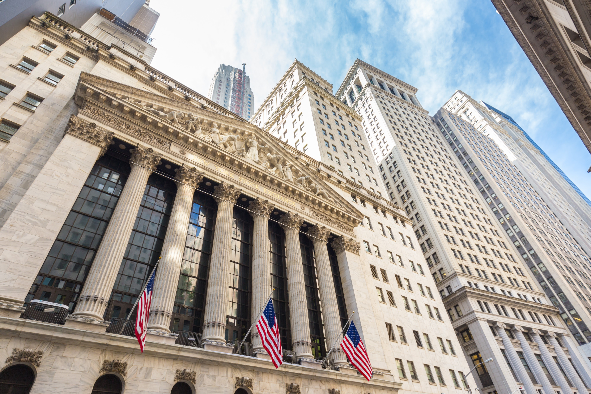
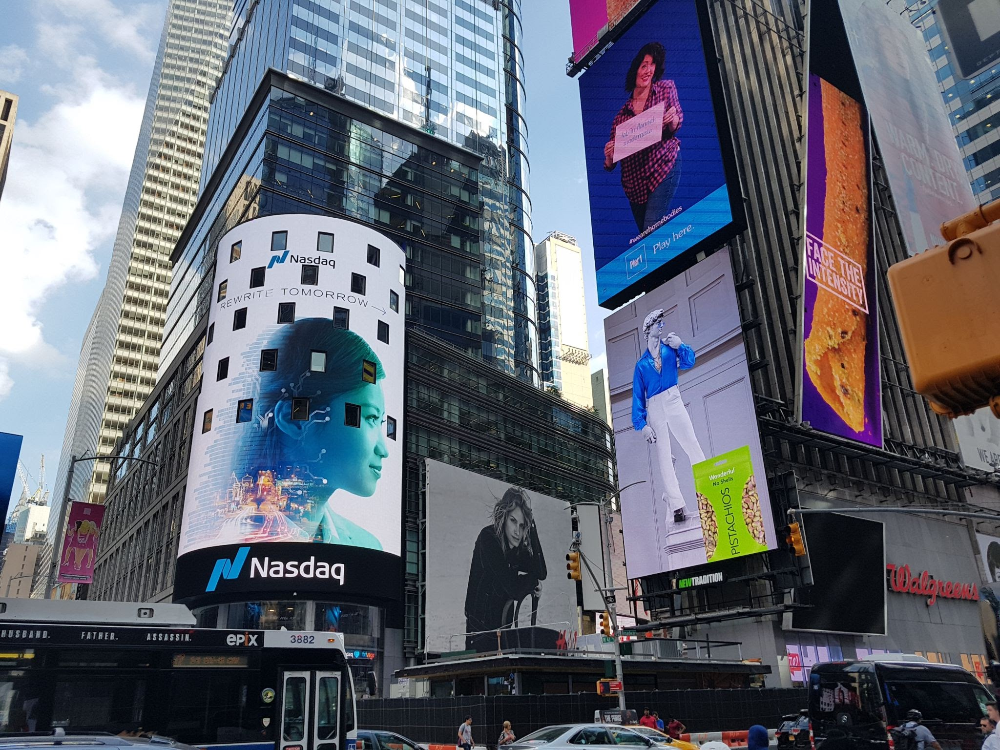
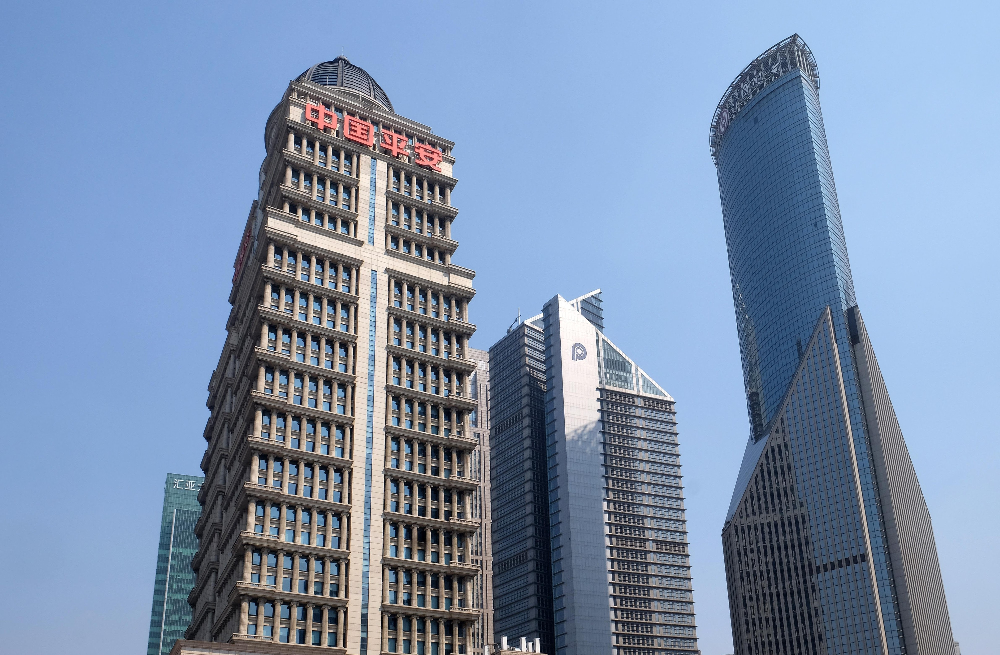

Le New York Stock Exchange (NYSE), créé en 1792, est le plus grand marché d'actions au monde. Son rôle est d'être le principal moteur de l'économie américaine, et son indice principal, le Dow Jones Industrial Average (DJIA), reflète les performances de 30 grandes sociétés industrielles et technologiques américaines, servant de baromètre économique mondial.

Le NASDAQ, fondé en 1971, est la première bourse électronique et domine le secteur technologique. Son rôle mondial est de financer et de coter les entreprises technologiques et de croissance. Son indice de référence, le NASDAQ Composite, inclut plus de 3 000 actions, majoritairement issues de la technologie, des biotechnologies et des télécommunications.

La Bourse de Shanghai (SSE), établie en 1990, est la plus grande bourse de Chine continentale. Elle joue un rôle crucial dans le financement de la croissance chinoise. Son indice clé, le SSE Composite Index, reflète la performance de toutes les actions cotées à Shanghai.
Le Japan Exchange Group (JPX), dont la Bourse de Tokyo est l'héritière (créée en 1878), est le plus grand marché d'Asie. Son rôle est central dans l'économie japonaise et dans la liquidité des marchés asiatiques. Son indice majeur, le Nikkei 225, représente un panier de 225 actions japonaises de premier ordre.